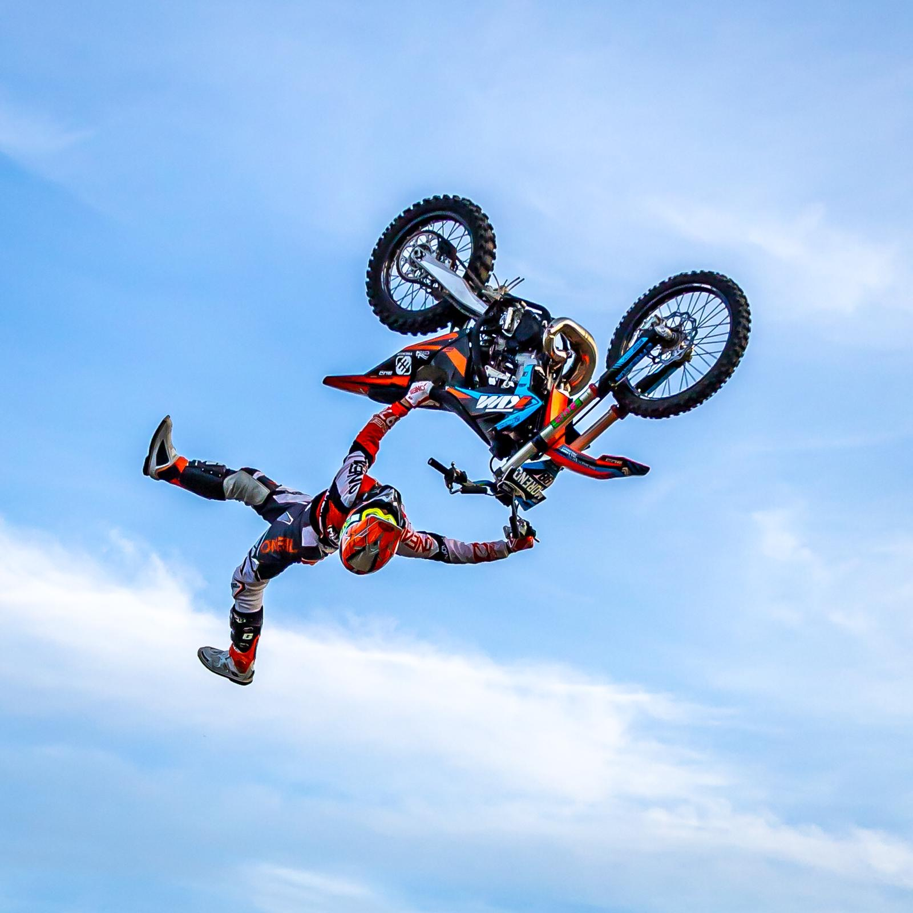

Freestyle motocross, also known as FMX, is one of the most popular variations of motocross in which many motorcycle riders attempt various types of stunts and jumps to impress the judges to gain points to win the competition. There are basically two types of freestyle events which are big air and freestyle motocross.
The big air event is also known as Best Trick in which every single motorcycle rider gets two jumps usually covering a distance of 75ft from a dirt covered ramp to perform a stunt. There is a panel of judges who are there to evaluate the trick, difficulty, style and the originality of the stunt. After judging the stunt the judges will scale the rider on a point scale of 100 marks.
The second type is the freestyle motocross which is also the older of the two disciplines. In this discipline the rider performs two stunt routines which will last for fourteen minutes and ninety seconds. The rider will perform its routing on a track of multiple jumps of different lengths and angles. The track length is about 4 to 8 acres. Similar to the Big Air event, it also has a panel of judges which assigns every participant a score based on a 100 point scale after looking at their stunts and tricks.
